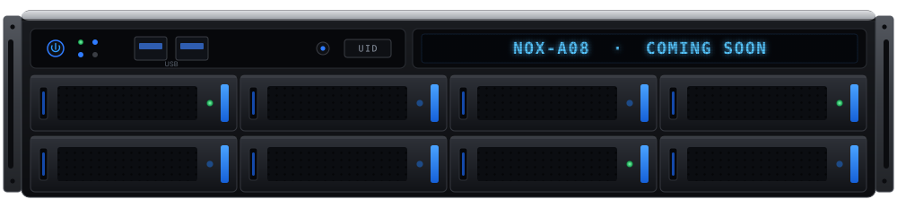

NOX-A08 시리즈
NOX-A08 Series
8베이 핫스왑 SATA를 갖춘 2U 랙마운트 NVR 어플라이언스 시리즈. 32·64·128채널 3개 모델로 제공됩니다. 영상은 항상 사용자 장비(on-prem)에 저장되고, Vision AI·VLM 기반 이벤트 감지·분석을 지원합니다.
A 2U rackmount NVR appliance series with 8 hot-swap SATA bays — available in three models (32/64/128 channels). Every recording stays on-prem, with AI-powered event detection and analysis (Vision AI, VLM).

NOX-A08 시리즈
하나의 2U 랙마운트 플랫폼에 8개의 핫스왑 SATA 베이(최대 240TB)를 담은 NVR 어플라이언스 시리즈. 32·64·128채널 3개 모델이 동일한 플랫폼을 공유하며, 이중 LAN·하드웨어 워치독으로 무인 환경에서도 스스로 복구하고, 3개의 독립 출력(2×4K HDMI + VGA)으로 대형 관제 화면을 구성합니다.
An NVR appliance series built on one 2U rackmount platform with 8 hot-swap SATA bays (up to 240TB). Three models — 32, 64, and 128 channels — share the same platform, with dual LAN and a hardware watchdog for self-healing in unattended sites, and three independent outputs (2×4K HDMI + VGA) for large monitoring walls.
- 32 / 64 / 128채널 3개 모델 · 동일 8베이 플랫폼Three models (32/64/128 ch) on one 8-bay platform
- 8 SATA 핫스왑 베이 · 최대 240TB8 hot-swap SATA bays · up to 240TB
- 이중 LAN · 하드웨어 워치독 기반 무중단 운영Dual LAN and hardware watchdog for nonstop operation
- 2×4K HDMI + VGA 3개 독립 출력Three independent outputs — 2×4K HDMI + VGA
- 순수 국산 설계 · 국가용 보안요구사항 V3.0 대비Designed and built in Korea · aligned to National Security Requirements V3.0
채널 규모별 3개 모델
Three models by channel capacity
모든 모델이 8개의 핫스왑 SATA 베이를 갖춘 2U 랙마운트 어플라이언스입니다. 채널 수만 다르며, 세 모델 모두 곧 함께 출시됩니다.
Every model is a 2U rackmount appliance with 8 hot-swap SATA bays — differing only in channel count. All three launch together soon.
NOX-A08128
대규모 현장을 위한 128채널 모델. 최대 용량으로 통합 녹화합니다.
A 128-channel model for large sites — maximum capacity in one box.
NOX-A08064
중규모 현장을 위한 64채널 모델. 동일한 8베이 플랫폼을 공유합니다.
A 64-channel model for mid-size sites, sharing the same 8-bay platform.
NOX-A08032
소규모 현장을 위한 엔트리 모델. 32채널을 8베이 스토리지에 담습니다.
An entry model for smaller sites — 32 channels backed by 8-bay storage.

VMS
다수의 카메라와 NVR을 하나의 화면에서 통합 관제합니다. 실시간 모니터링, 이벤트 검색, 권한 관리까지 직관적인 웹 인터페이스로 운영할 수 있으며, WebRTC·WHIP 기반의 저지연 스트리밍을 지원합니다.
Manage many cameras and NVRs from a single pane of glass. Run live monitoring, event search, and access control through an intuitive web interface, with low-latency streaming powered by WebRTC/WHIP.
- WebRTC · WHIP 기반 저지연 실시간 관제Low-latency live view via WebRTC / WHIP
- 이벤트 검색 · 타임라인 재생Event search and timeline playback
- 사용자 권한 · 다지점 통합 관리User permissions and multi-site management
NOX Mobile
언제 어디서나 스마트폰으로 현장을 확인하세요. Android · iOS 전용 앱으로 실시간 멀티뷰와 녹화 재생을 지원하고, 이벤트 푸시 알림을 받아볼 수 있습니다. 외부에서도 안전하게 내 NOX에 연결됩니다.
Check your sites anywhere from your phone. Dedicated Android and iOS apps offer live multi-view and recording playback with event push alerts — securely connecting to your NOX from anywhere.

실시간 멀티뷰
Live multi-view
여러 카메라를 한 화면에서 동시에 라이브로 모니터링합니다.
Monitor many cameras live on one screen at once.

녹화 재생 · 타임라인
Playback & timeline
타임라인을 스크럽해 원하는 시점의 녹화를 즉시 재생하고, 배속으로 빠르게 확인합니다.
Scrub the timeline to jump to any moment and review at adjustable speed.
- Android 전용 앱Dedicated Android app
- iOS 전용 앱Dedicated iOS app
- 실시간 멀티뷰 · 녹화 재생 · 이벤트 푸시 알림Live multi-view, playback, and event push alerts
OEM
NOX의 영상·AI 코어 엔진을 파트너의 제품에 임베드해, 파트너 브랜드로 출시할 수 있도록 지원합니다. 하드웨어 제조사와 SI 파트너가 소프트웨어 개발 부담 없이 빠르게 완성도 높은 제품을 내놓을 수 있습니다.
Embed the NOX video and AI core engine into your product and ship it under your own brand. Hardware makers and SI partners can bring polished products to market fast — without building the software themselves.
- 화이트라벨 빌드 · 파트너 브랜딩White-label builds and partner branding
- 맞춤 기능 개발 · 외부 시스템 연동Custom feature development and integrations
- Vision AI·VLM 등 다양한 AI 모델 적용Apply various AI models such as Vision AI and VLM